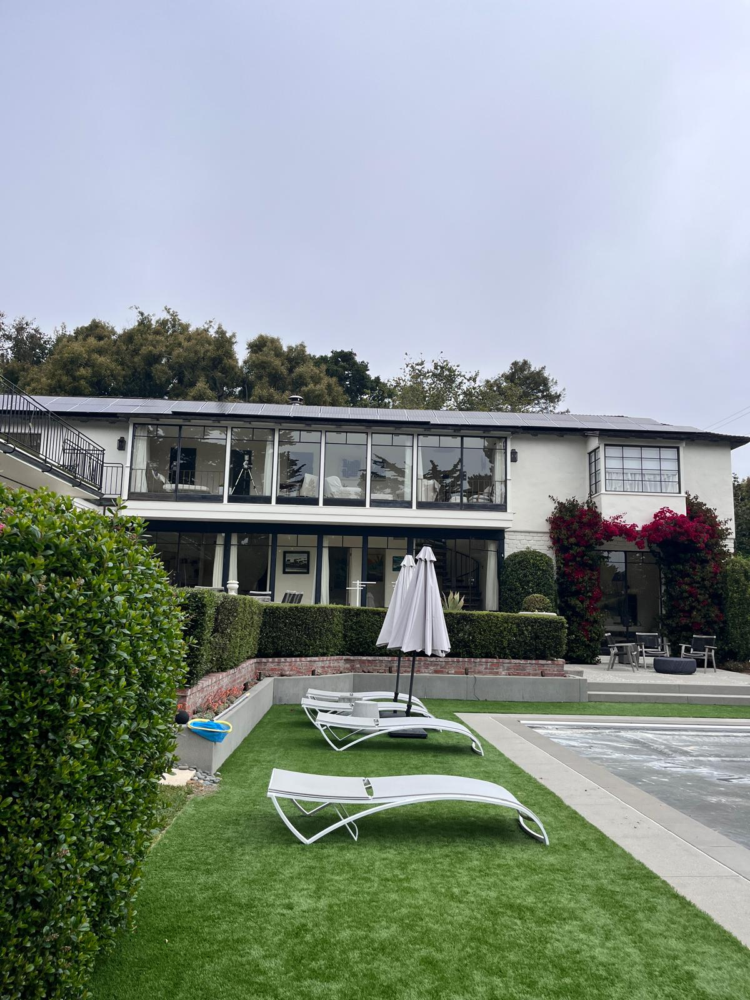
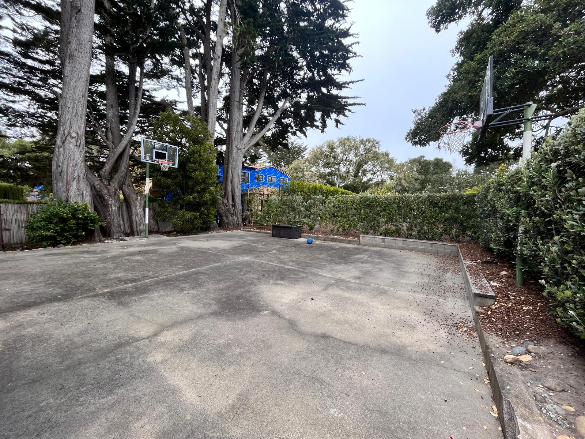
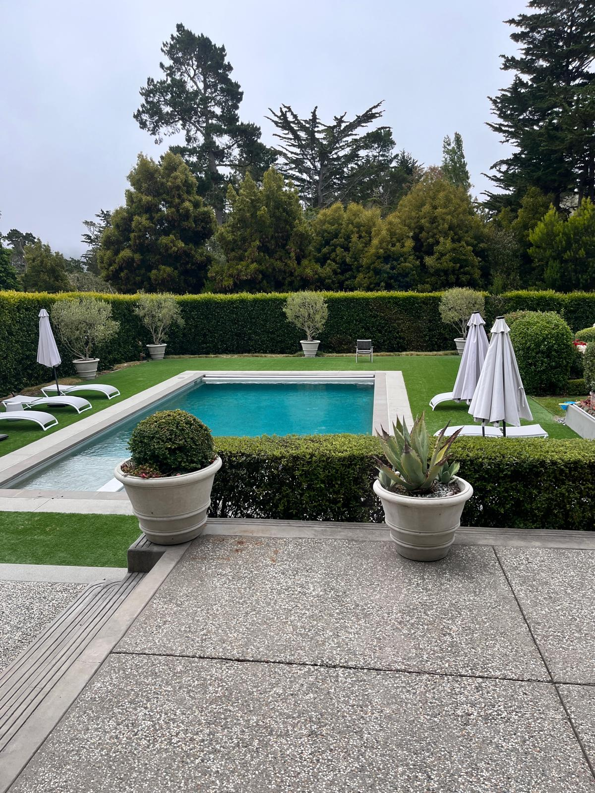
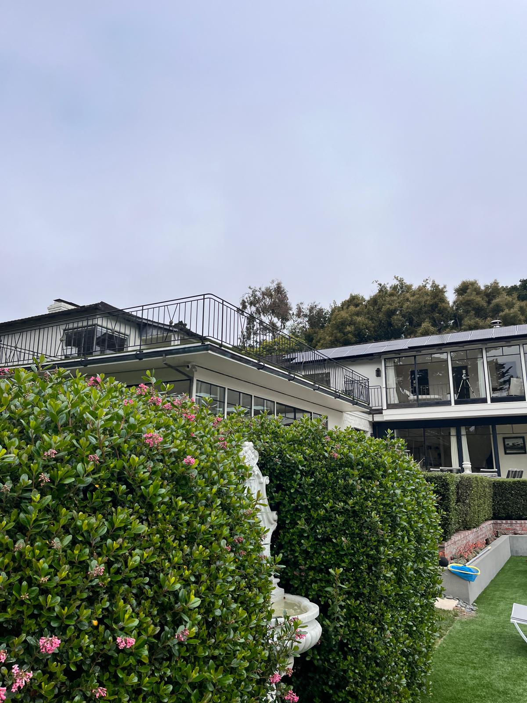

I am currently a student at University of California, Riverside pursuing a Bachelor of Arts in Economics & Administrative Studies, where I am developing a strong foundation in business, economics, finance, and leadership. Growing up in Carmel, California, I learned the importance of hard work, communication, and community involvement from an early age. These values continue to shape both my academic and professional journey today. I enjoy environments where I can collaborate with others, solve problems creatively, and continue learning from people with different perspectives and experiences. My interests in business strategy, real estate, and organizational leadership have motivated me to seek opportunities that challenge me to grow while building meaningful relationships along the way.
Over the past several years, I have gained experience in leadership, real estate, customer service, operations, and community engagement. My professional journey has allowed me to work with a variety of organizations that have strengthened my ability to communicate effectively, manage responsibilities, and contribute meaningfully to team-oriented environments. I believe that every experience, whether academic, professional, or service-oriented, has played an important role in shaping my work ethic and helping me become more adaptable and confident as a young professional. I am passionate about continuous improvement and always look for opportunities to challenge myself while building meaningful relationships with others.
At UCR Real Estate Club, I currently serve as an intern where I have gained exposure to real estate investment analysis, underwriting, and market research. Through workshops and collaboration with industry professionals, I have learned how investors evaluate opportunities by analyzing property values, market trends, projected returns, and risk factors. I have contributed to the club’s investment research initiatives and participated in discussions surrounding deal analysis and market positioning. One of the most valuable aspects of this experience has been the opportunity to network with professionals across brokerage, investment, and development. Hearing firsthand insights from experienced individuals in the industry has expanded my understanding of real estate and strengthened my interest in pursuing opportunities related to business strategy, investment analysis, and finance.
Before beginning college, I worked as an Administrative Summer Intern at Carmel Realty Company, where I supported the operations of more than 120 vacation rental properties. In this role, I coordinated home inspections, responded to client inquiries, prepared invoices, and assisted with property management logistics. I also created property guidebooks using Adobe Express to ensure consistent and professional marketing materials for clients and guests. Working in a fast-paced customer-facing environment taught me the importance of professionalism, organization, and attention to detail. I learned how to communicate clearly with clients, manage multiple responsibilities simultaneously, and remain adaptable in situations that required quick problem-solving. This experience also gave me a stronger appreciation for the operational side of the real estate industry and the importance of delivering high-quality customer service.
In addition to my professional experiences, leadership and community involvement have been central parts of my personal development. During high school, I served as Vice President of the Carmel High School Associated Student Body, where I worked closely with fellow student leaders, advisors, and administrators to organize school events and strengthen student engagement. Through this role, I helped coordinate activities such as football game events, informational meetings, and the homecoming parade while representing the interests of the senior class. These experiences strengthened my leadership abilities and taught me the importance of teamwork, communication, and accountability when working toward shared goals.
One of the experiences that has had the greatest impact on me has been my involvement with the American Red Cross. Over several years, I served as both Central Coast Chair of the Youth Executive Board and president of my school’s Red Cross Club. In these roles, I collaborated with students and volunteers across multiple counties to organize community service initiatives, blood drives, and educational outreach events. I participated in Sound the Alarm campaigns, supported wildfire relief fundraising efforts, and helped coordinate blood drives that resulted in dozens of donations. Through these experiences, I developed a deeper understanding of leadership through service and learned how meaningful community impact is created through consistency, teamwork, and empathy. Working alongside dedicated volunteers and community leaders inspired me to continue finding ways to contribute positively to the people around me.
I have also been actively involved in organizations that connect me to both my academic interests and cultural background. At Young Jains of America, I serve as a Local Representative where I collaborate with regional leaders and members across the West Coast to coordinate events and strengthen engagement within the Jain community. One of the highlights of this experience was helping organize a three-day retreat for over 40 attendees while also contributing to discussions focused on leadership and community development. I also earned first place in the Jains in Action Business Competition by helping create an innovative solution addressing issues related to fast fashion. Experiences like these have strengthened my interest in combining business, innovation, and social impact in meaningful ways.
Outside of academics and professional work, I enjoy photography, reading, cricket, cross country, Bollywood films, and following the Golden State Warriors. I value creativity, discipline, and lifelong learning, and I believe my hobbies help me maintain balance while continuing to grow personally and professionally. I am fluent in English, Gujarati, and Hindi, with basic proficiency in Spanish, and I enjoy connecting with individuals from diverse backgrounds and experiences. Being multilingual has helped me build stronger relationships and better understand the importance of communication and cultural awareness in both professional and personal settings.
As I continue my education and professional journey, I hope to further develop my skills in leadership, business analysis, finance, and real estate while continuing to make a positive impact within my community. I am eager to continue learning from mentors, collaborating with driven individuals, and pursuing opportunities that challenge me to grow. My long-term goal is to build a career that combines business strategy, leadership, and service while creating meaningful relationships and contributing to organizations that value innovation, integrity, and community impact.
• Applied underwriting frameworks to evaluate real estate investment opportunities and market trends
• Collaborated with industry professionals to analyze pricing, risk, and property positioning
• Assisted in creating investment research materials and market-focused newsletters
• Strengthened communication, analytical, and networking skills through club events and workshops
• Managed client home inspections and supported operations for 120+ vacation properties
• Designed professional property guidebooks using Adobe Express for marketing purposes
• Handled client calls and provided detailed information regarding vacation rental properties
• Generated invoices and assisted with financial documentation and property organization
• Directed youth leadership initiatives and coordinated community outreach programs across three counties
• Organized annual blood drives and assisted with donor support and event logistics
• Participated in Sound the Alarm campaigns to improve fire safety awareness in local communities
• Led volunteer teams and raised funds to support disaster relief and emergency response efforts
• Organized school events including homecoming activities, meetings, and student engagement initiatives
• Worked closely with student leaders and advisors to coordinate class participation and communication
• Managed event responsibilities including finances, scheduling, and operational planning
• Represented student interests and encouraged positive school spirit throughout the academic year



